유저 정보
보유 재화
결과
이대로 작전을 시작해도 되겠습니까?최적 조합
입력이 바뀌어 아래 곡선이 현재 입력과 맞지 않을 수 있습니다. 계산을 다시 눌러 주세요.
비용–일수 곡선
싱크로 Lv · 전초기지 Lv
| 총 과금 | 일수 | 도달 날짜 | 1Lv.당 비용 |
|---|---|---|---|
| 계산 버튼을 눌러주세요 | |||
패키지
계산 조합이 50만가지를 넘으면 느려집니다. (최대 17개 권장, 비효율 패키지는 구매횟수 조절)
구매 규칙 설정
일일 수급재화 항목
시뮬레이션
작전날짜
매일 보스에 도전할 필요는 없습니다. 출격할 날짜는 제가 계산해 두겠습니다. 그날에 명령만 내려 주십시오, 지휘관.
죄송합니다, 지휘관. 돌파/모듈작에 따라 ±6% 오차가 발생할 수 있습니다. 실제 기록을 알려 주시면 즉시 바로잡겠습니다.
입력하면 더 정확하게 보정합니다. 투력만 입력: 그 투력으로 투력차 계산 / 싱크로만 입력: 그때 투력을 추정 / 둘 다 입력: 1군 전투력이 비어 있으면 본인 곡선도 함께 보정
예상 투력은 돌파, 모듈작 여하에 따라 ±6% 오차가 있습니다.
49·50챕터는 개방 직후라 신뢰도가 낮습니다.
엑셀 원본 데이터
BlaBla 연동
어려워 보여도 제가 곁에서 천천히 도와드리겠습니다, 지휘관. 제가 아는 지휘관이라면, 반드시 해내실 수 있습니다.
처음 한 번만 준비하면, 다음부터는 [연동 시작] 한 번으로 끝납니다.
처음이라면: 연동 준비 5단계
- 1Tampermonkey 설치
Chrome 확장 프로그램 Tampermonkey를 설치해 주십시오. Get from Store를 누른 뒤 [Chrome에 추가]를 눌러 주십시오.
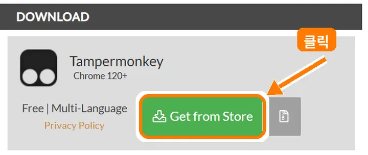
Tampermonkey 사이트 열기 ↗ - 2확장 프로그램 관리 열기
주소창 오른쪽 Tampermonkey 아이콘을 우클릭 → [확장 프로그램 관리]를 눌러 주십시오. 아이콘이 보이지 않으면 퍼즐 모양 아이콘 안에 있습니다.
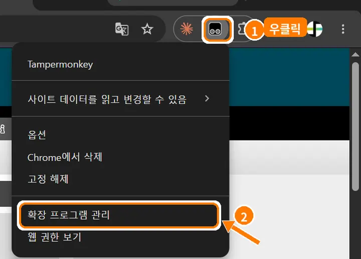
- 3사용자 스크립트 허용 켜기
화면 아래쪽 [사용자 스크립트 허용] 스위치를 켜 주십시오. 이 스위치를 켜야 연동 스크립트가 동작합니다.
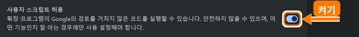
- 4연동 스크립트 설치
아래 버튼을 누르면 Tampermonkey 설치 화면이 나타납니다. 왼쪽 위 [설치]를 눌러 주십시오.
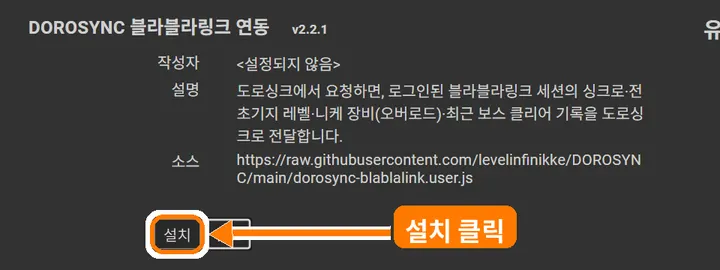
연동 스크립트 설치 ↗설치 화면이 안 뜰 때
Tampermonkey 대시보드 → 새 스크립트 → 내용을 모두 지우고 아래 코드를 붙여넣은 뒤 저장해 주십시오.
- 5블라블라링크 로그인
블라블라링크에 게임 계정으로 로그인해 두십시오. 그다음 아래 [연동 시작]을 누르시면 새 창이 열리고, 제가 정보를 자동으로 가져오겠습니다.
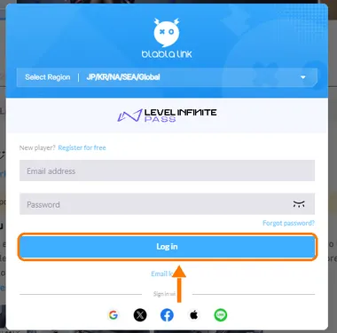
- 블라블라링크 창 열기
- 연동 스크립트 응답
- 유저 정보
스크립트는 블라블라링크 안에서 로그인된 지휘관의 세션으로 위 정보만 읽어 이 페이지로 보냅니다. 아이디·비밀번호·토큰은 읽지도, 전송하지도 않습니다.
블라블라링크 프로필 주소 하나만 건네주시면, 나머지는 제가 처리하겠습니다.
PC든 모바일이든 상관없습니다.
처음이라면: 프로필 공개 설정 3단계
- 1설정 열기
블라블라링크에 로그인한 뒤, 오른쪽 위 프로필 사진을 누르고 [설정]으로 들어가 주십시오.
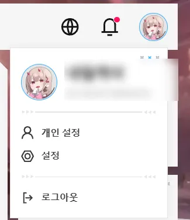
- 2모두에게 공개
왼쪽 메뉴의 [SHIFTYPAD 숨김 설정]에서 모든 항목을 모두에게 공개로 바꿔 주십시오. 특히 전초기지 정보와 나의 니케가 공개되어 있어야 제가 읽을 수 있습니다.
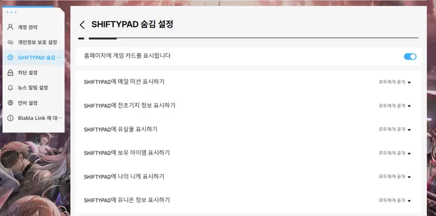
- 3프로필 주소 복사
블라블라링크에서 내 프로필을 열고, 주소창의 주소(
…/user?openid=…)를 복사해 아래에 붙여넣어 주십시오. 공유 버튼으로 복사한 링크도 괜찮습니다.
어려워 보여도 제가 곁에서 천천히 도와드리겠습니다, 지휘관. 제가 아는 지휘관이라면, 반드시 해내실 수 있습니다.
모바일은 즐겨찾기 1개만 만들어 두면, 다음부터는 블라블라링크에서 누르기만 하면 됩니다.
먼저 아래 버튼으로 코드를 복사해 두십시오.
코드 직접 보기
- 1즐겨찾기 추가
아무 페이지나 괜찮습니다. …기왕이면 제 페이지였으면 합니다만.
주소창 왼쪽 ≡ 버튼 → [즐겨찾기에 추가]를 눌러 주십시오.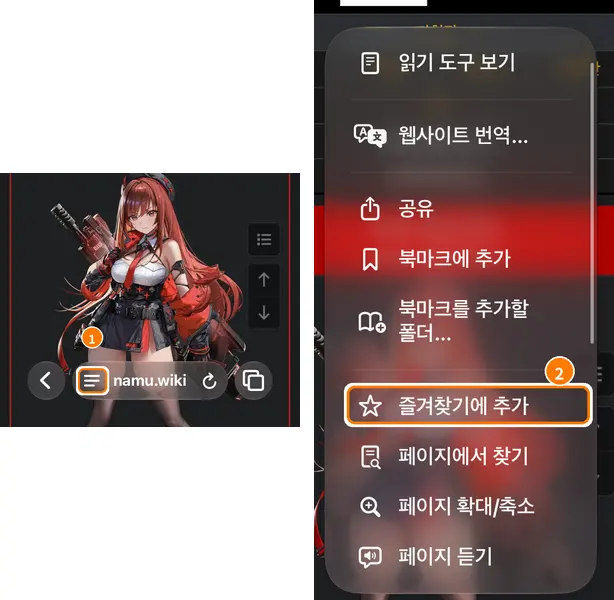
메뉴에 '즐겨찾기에 추가'가 없다면
메뉴 맨 아래 [메뉴 사용자화] → [+ 즐겨찾기에 추가]를 누르면 메뉴에 생깁니다.
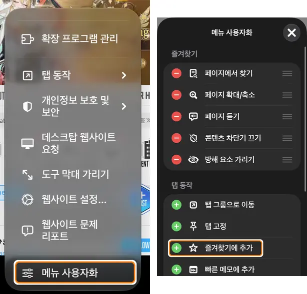
- 2저장
오른쪽 위 [저장]을 눌러 주십시오. 이름과 주소는 다음 단계에서 바꾸겠습니다.
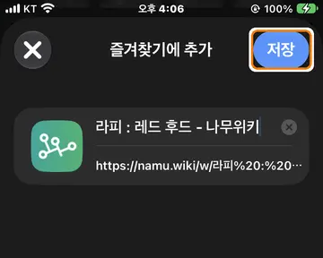
- 3즐겨찾기 편집 열기
주소창을 누르시면 즐겨찾기가 보입니다. 방금 만든 즐겨찾기를 길게 눌러 [편집]을 골라 주십시오.
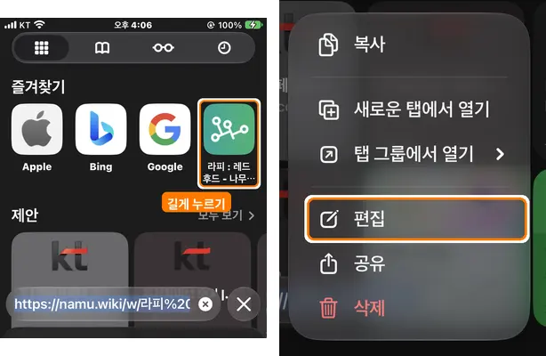
- 4이름·주소 바꾸기
① 이름: DOROSYNC 연동
② 주소: 내용을 모두 지우고 위에서 복사한 코드를 붙여넣기
③ [저장]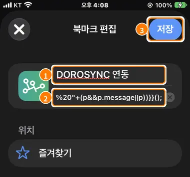
- 5블라블라링크에서 실행
블라블라링크에 로그인한 상태에서 ① 주소창을 누르고 ② 즐겨찾기 [DOROSYNC 연동]을 눌러 주십시오. 잠시 뒤 이 사이트로 돌아오며, 정보가 도착합니다.
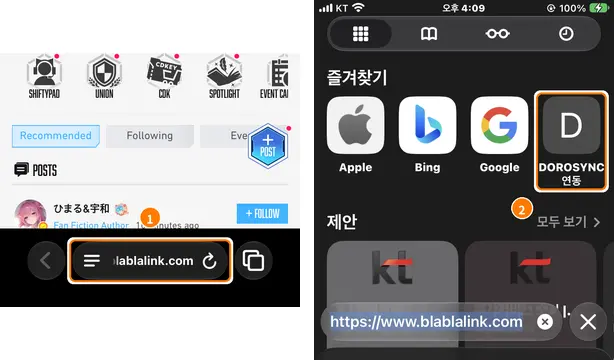
- 1북마크 추가
아무 페이지나 괜찮습니다. …기왕이면 제 페이지였으면 합니다만.
오른쪽 아래 ⋯ → [북마크에 추가]를 눌러 주십시오.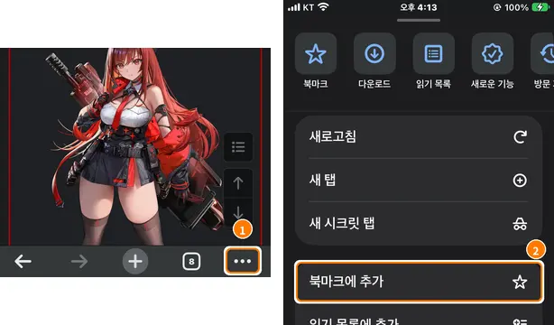
- 2북마크 고르기
① ⋯ → [북마크] ② [선택] ③ 방금 만든 북마크 체크 ④ [더보기...]
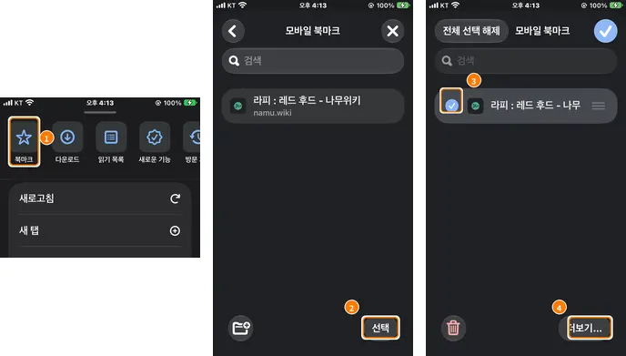
- 3이름·URL 바꾸기
[북마크 수정]을 누르고 ① 이름: DOROSYNC 연동 ② URL: 모두 지우고 복사한 코드를 붙여넣기 ③ 오른쪽 위 ✓
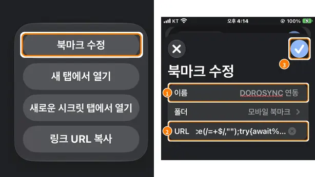
- 4블라블라링크에서 실행
블라블라링크에 로그인한 상태에서 ① ⋯ ② [북마크] ③ [DOROSYNC 연동]을 눌러 주십시오. 잠시 뒤 이 사이트로 돌아오며, 정보가 도착합니다.
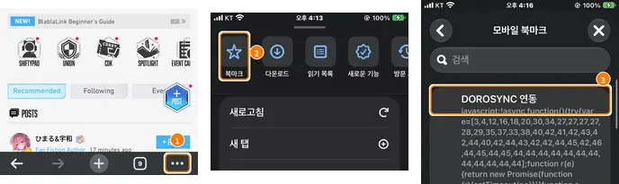
- 1북마크 추가
아무 페이지나 괜찮습니다. …기왕이면 제 페이지였으면 합니다만.
① 오른쪽 위 ⋮ → ② ☆를 눌러 주십시오.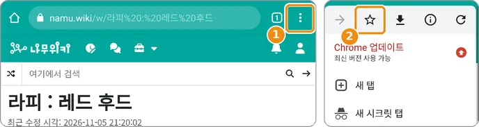
- 2북마크 수정 열기
① 다시 ⋮ → [북마크] ② 방금 만든 북마크 옆의 ⋮ ③ [수정]
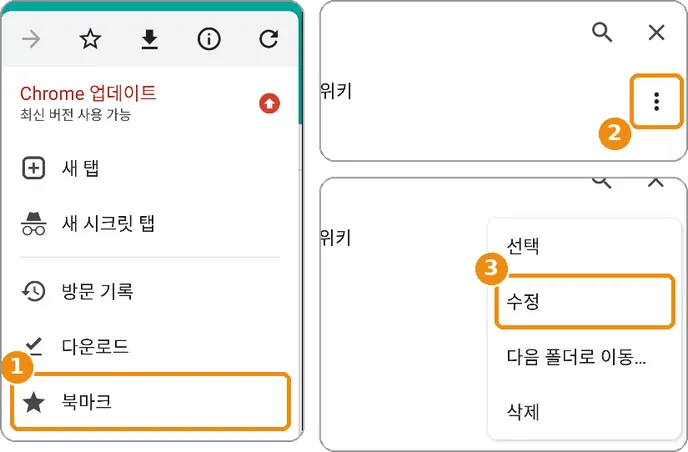
- 3이름·URL 바꾸기
① 이름: DOROSYNC 연동
② URL: 모두 지우고 복사한 코드를 붙여넣기
③ 왼쪽 위 ←를 누르면 저장됩니다.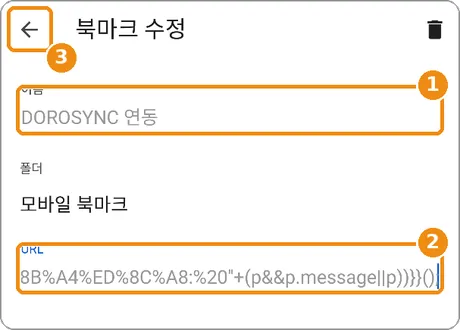
- 4블라블라링크에서 실행
블라블라링크에 로그인한 상태에서 ① 주소창에 DORO를 입력하고 ② 아래에 나오는 ☆ DOROSYNC 연동을 눌러 주십시오. 잠시 뒤 이 사이트로 돌아오며, 정보가 도착합니다.
(북마크 목록에서 직접 누르면 실행되지 않습니다.)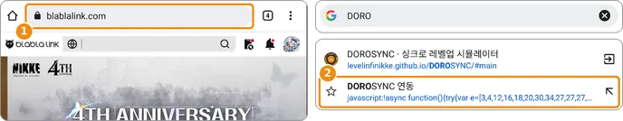
북마클릿은 블라블라링크 안에서 로그인된 지휘관의 세션으로 싱크로·전초기지 레벨·니케 장비·클리어 기록만 읽어, 압축한 뒤 이 사이트 주소의 # 뒤에 붙여 이동합니다. # 뒤의 내용은 서버로 전송되지 않으며, 아이디·비밀번호·토큰은 읽거나 전송하지 않습니다.
바로 이동이 안 될 때 (코드 붙여넣기)
북마클릿 실행 후 연동 코드가 클립보드에 복사되어 있으면, 이 사이트로 돌아와 아래에 붙여넣고 반영해 주십시오.
니케 선택
BlaBla 연동
내 싱크로·전초기지 레벨·1군 전투력·최근 보스 클리어 기록과 니케 오버로드를 블라블라링크에서 가져옵니다.
인벤토리
여기서 고친 값은 쥬얼 탭·싱크로 보유 재화와 함께 바뀌어요.